Toggle on the Ftp-Remote-Edit tab from the Packages menu.
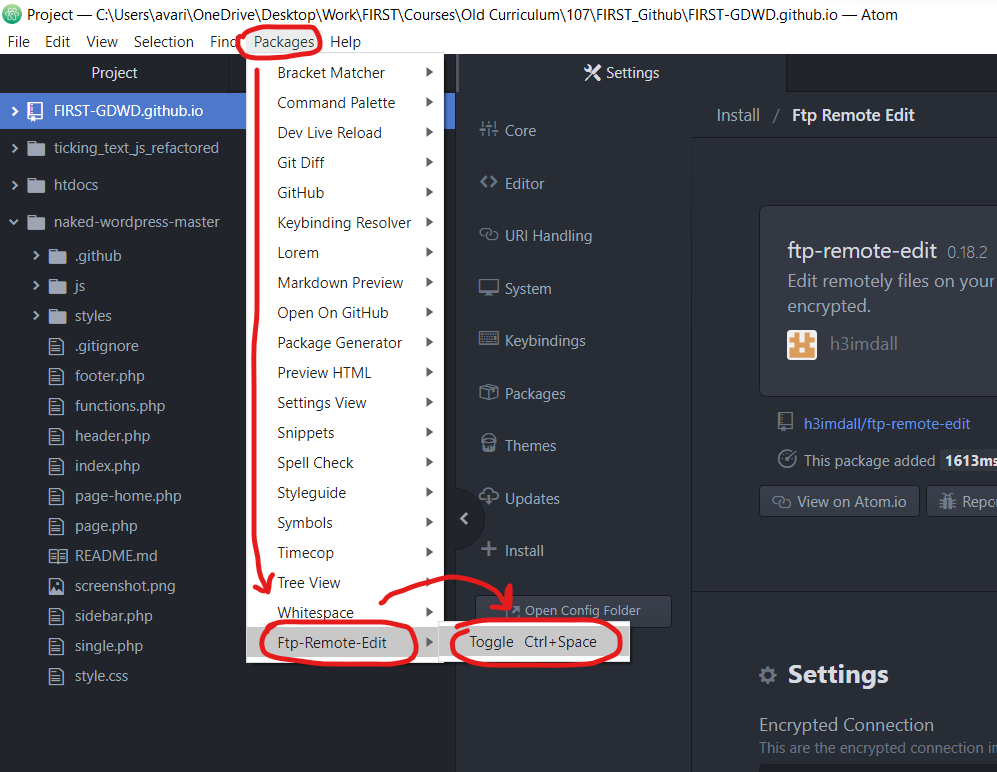This will open up a new tab next to Projects in the left sidepanel.
Click the Edit Servers button in here.
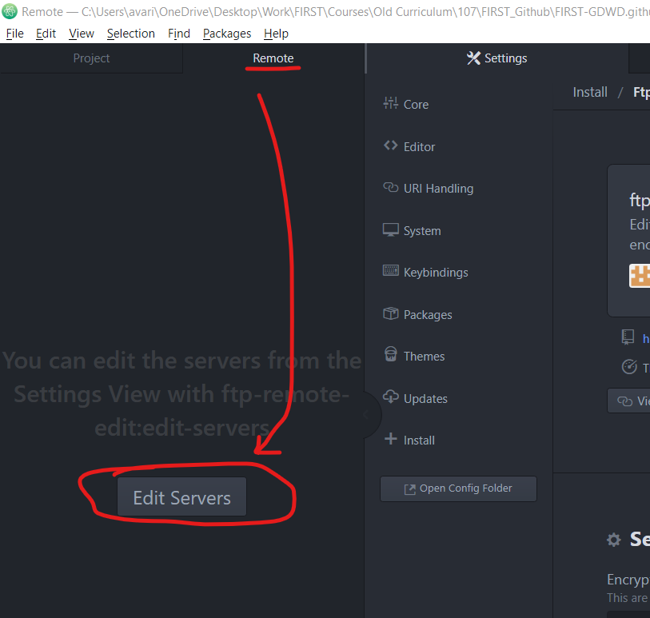This will open up a dialog with a lot of information to populate. Pause for a moment here; we'll jump back to this dialog later.
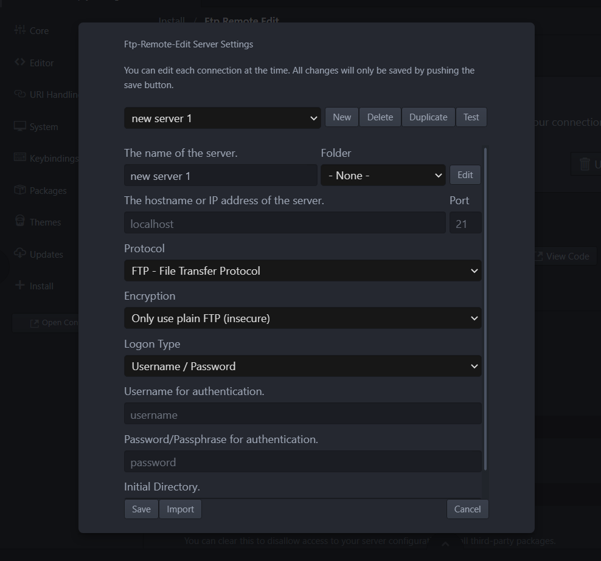In Chrome, navigate and log in to your Pantheon Dashboard (the general one, not the site specific one).
From there, navigate to the Pantheon Dashboard for your AHR site.
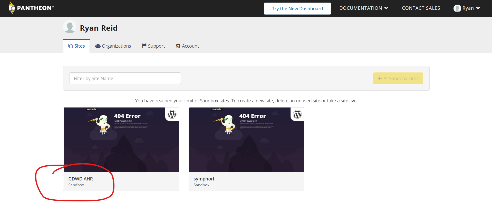On your AHR Pantheon Dashboard, click the Connect with SFTP button.
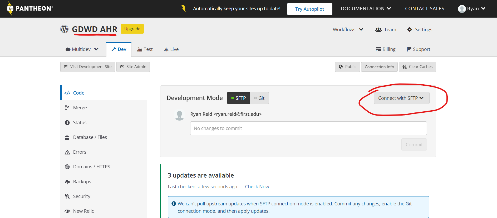This will cause a popup to appear. You'll be jumping back and forth between this popup and the dialog in Atom
The important data points from this popup are Host, Username, Password, and Port.
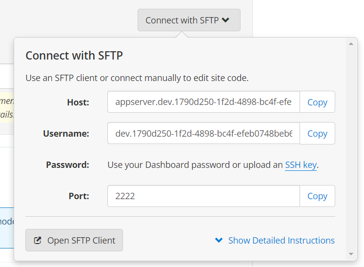Go back to Atom, and click the New button. Then populate the data in the dialog form.
"The name of the server" can be anything you like, though I would reference AHR somewhere in there.
The remaining underlined inputs in the screenshot below are data fields you select yourself.
The inputs with arrows pointing to them are data points that come from the Pantheon popup.
(don't forget about the Port! Although it only shows two digits, you may need to put four digits in there.)
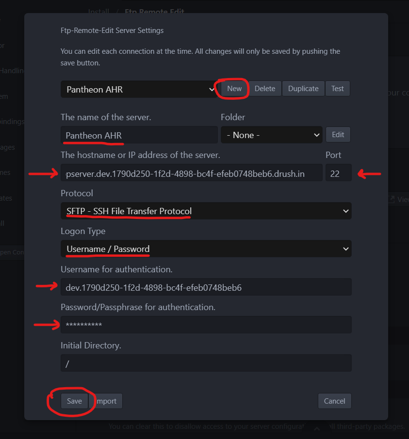After you click the Save button, you should see a new folder structure in the Remote tab. These are the folders found in your Pantheon server.
The WordPress-related folders can be found in the "code" folder.
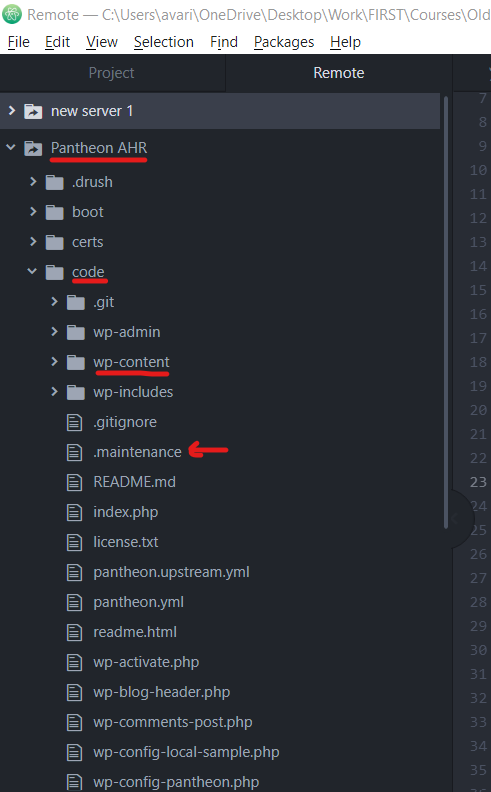While having the Finder/File Explorer window open on top of Atom, drag the .maintenance file into the /code folder in Atom.
(Make sure the /code folder highlights in Atom before you release the mouse; otherwise it may just open the file in a new tab, rather than copying it to your Pantheon server.)
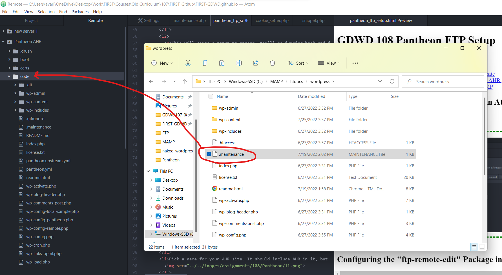Now, copy over the maintenance.php and cookie_setter.php files from your local MAMP /wp-content folder to the Remote /wp-content folder as well.
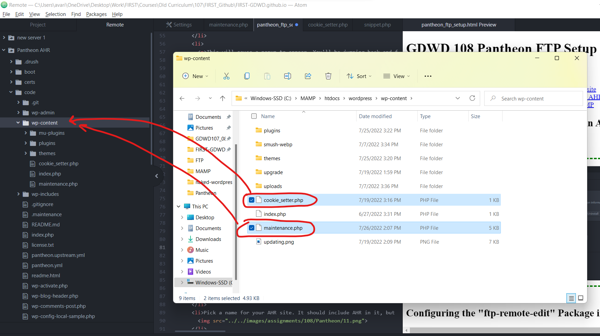Now, visit your AHR site on Pantheon again, and refresh it. You should see the upgraded web page you built from the previous assignment.
Congrats! You've now moved your maintenance page to the remote Pantheon WordPress server!
...but you're not quite done yet. The cookie code doesn't work anymore, and we'll need to make a few changes to fix it.
The "action" filepath we used in the form will not word on Patheon anymore, because there is no /wordpress/ in the folder structure on Pantheon. So we need to remove it, as in the screenshot below.
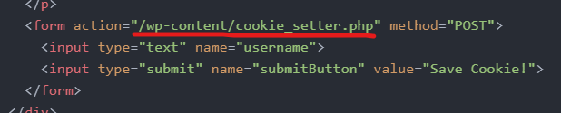Cookies in Pantheon need to be prefixed with "SESS" if we want to access them, so change the name of the cookie we're created to be "SESSusername", as in the screenshot below.
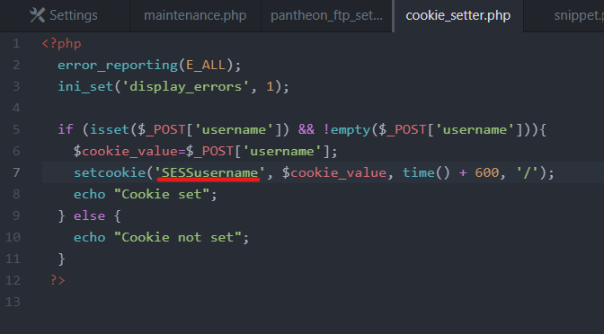Since we changed the cookie name where we set the cookie, we also need to change the name where we access it.
So, change the references of the cookie name to "SESSusername" here as well, like in the screenshot below
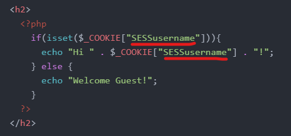Congrats! You successfully implemented maintenance mode on Pantheon!
(Remember to delete or change the name of .maintenance to turn off maintenance mode on your site)